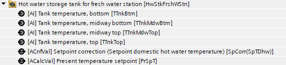
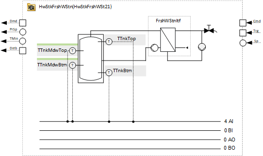
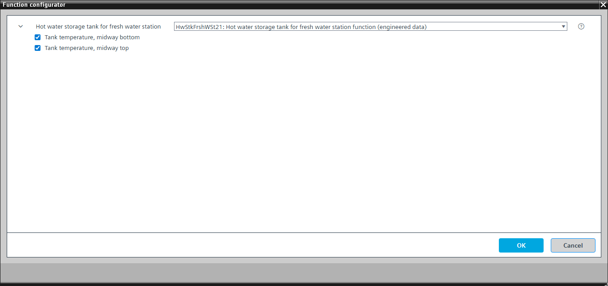
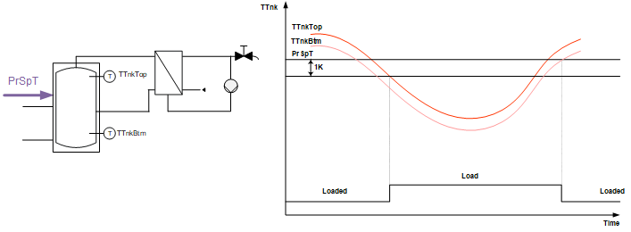
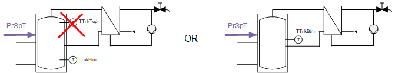
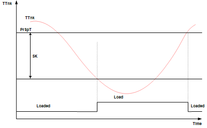

[HwStkFrshWSt21] Hot water storage tank for fresh water station function
Program block, name / node subtype: [HwStkFrshWSt21] Hot water storage tank for fresh water station function
Library hierarchy: Heating equipment
Family: HwStkFrshWStn
Project tree | Diagram |
|---|---|
 |  |
Configurator


Program blocks are stored in the library without I/Os. Use the auto-create and auto-connect functions to create I/Os and/or to connect them to the interface blocks, e.g., R_A, CMD_B. Alternatively, take the I/Os from the folder containing the predefined I/Os in the library and/or from the plant and connect them to the interface blocks.
Function
Storage tank charge
Two sensors are planned: One is installed in the top area and the other in the bottom area of the storage tank. These two temperatures determine the charging state.

PrSpT | Present temperature setpoint | TTnk | Tank temperature |
TTnkTop | Tank temperature, top | TTnkBtm | Tank temperature, bottom |
The present temperature setpoint is calculated by adding SpCorr(SpTDhw) to SpTDhw.
Charging required: | The storage tank is discharged. It must be charged if the high temperature sensor is below the setpoint minus a switching differential of, e.g., 1 K. |
Charged: | The storage tank is charged when both temperature sensors register a temperature above the setpoint. The storage tank is charged using the storage tank charging circuit. |
Special case: | The switching differential automatically increases, e.g., by 5 K, in the event of a top sensor failure or if there is only one sensor (connected as TTnkBtm and located in the middle of the storage tank). |


Option: Tank temperature, midway top (1xAI)
Creates an analog input for the tank temperature, midway top, and reads its signal. It can generate an alarm (high and low limit).
Event detection is suppressed for the predefined I/O when the program block is off.
A program logic changes the notification class of the predefined I/O to "Notification class 4".
Option: Tank temperature, midway bottom (1xAI)
Creates an analog input for the tank temperature, midway bottom, and reads its signal. It can generate an alarm (high and low limit).
Event detection is suppressed for the predefined I/O when the program block is off.
A program logic changes the notification class of the predefined I/O to "Notification class 4".
Mandatory elements
Name | Description | Type | Alarm / Notification class | Trend / Type | |
|---|---|---|---|---|---|
PrSpT | Present temperature setpoint | ACalcVal: Analog calculated value | No | No | |
SpCorr(SpTDhw) | Setpoint correction (Setpoint domestic hot water temperature) | ACnfVal: Analog configuration value | N/A | No | |
TTnkTop | Tank temperature, top | AI: Analog input | No | Yes, 3 | |
TTnkBtm | Tank temperature, bottom | AI: Analog input | No | Yes, 3 | |
Event detection is suppressed for the predefined I/O when the program block is off.
A program logic changes the notification class of the predefined I/O to "Notification class 4".
Optional elements
Name | Description | Type | Alarm / Notification class | Trend / Type | |
|---|---|---|---|---|---|
TTnkMdwTop | Tank temperature, midway top | AI: Analog input | No | Yes, 3 | |
TTnkMdwBtm | Tank temperature, midway bottom | AI: Analog input | No | Yes, 3 | |